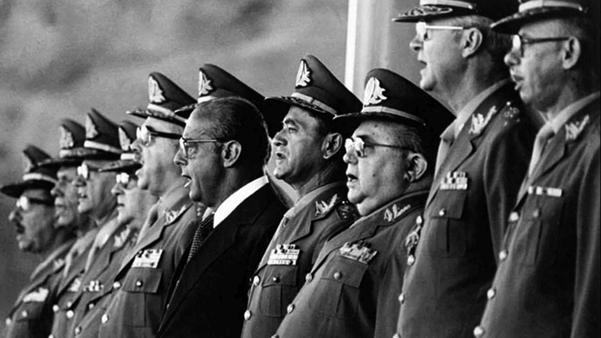

Categories: Dictatorship; coup; Operation Condor; amnesty law; reparations law; truth commission; memorial sites.
Actors: Brazilian state; Brazilian Armed Forces; various political parties, reduced to two legal parties for many years of the dictatorship; several civil organisations.
1973-1976 : A period of three Peronist administrations during which the country experienced a climate of violence and generalised instability, as part of the struggle for power between the different factions of this movement. The end of this period was marked by a series of politically motivated deaths.
1964 : On March 31, during the presidency of Joao Goulart, the armed forces rebel against the government. After the coup d’état, General Humberto Castelo Branco is designated as head of government, and Goulart goes into exile in Uruguay. The military dictatorship deployed a series of measures aiming to thwart political opposition to the regime, which turned into a violent repressive campaign. This repression was also coordinated with other governments of the broader South American region through the Operation Condor.
1968 : Passeata dos Cem Mil. A mass protest the dictatorship took place in Rio de Janeiro, with the participation of different sector of Brazilian civil society.
1972 : The organisation Amnesty International publishes a report containing the names of victims of torture in Brazil. It also identifies some of the state officials responsible.
1974 : On February 23, student Fernando de Santa Cruz was detained by agents of the state in Rio de Janeiro, then killed and forcibly disappeared.
1975 : On October 26, journalist Vladimir Herzog was tortured and killed after visiting a police station. His murder provoked shock and reactions throughout Brazilian society.
1976 : Between January 16 and 17, the metal worker Manoel Fiel Filho is tortured and killed by agents of the dictatorship.
1977 : In a courtyard of the Universidad de São Paulo, the lawyer Goffredo Telles Jr. read out the “Carta aos brasileiros”, a text condemning the dictatorship.
1979 : Lei da Anistia. The dictatorship government decreed an amnesty law. It was a long-standing demand of Brazilian civil society, intended to benefit citizens that were politically persecuted, though it was approved in the terms defined by the government.
1985 :The book Brasil: nunca mais was published. It is a report that documents, from judicial sources, cases of human rights violations during the dictatorship
1985 : Tancredo Neves became president through an electoral college, defeating the candidate of the dictatorship’s government. Neves died the same year and José Sarney became president.
Memory initiatives Lei N°9.140 “Lei dos Desaparecidos” (1995): a legal instrument that establishes the state’s responsibility in the death of people forcibly disappeared because of their political activities between 1961 and 1988. Also creates the Comissão Especial sobre Mortos e Desaparecidos Políticos. Lei N°10.559 (2002): a legal instrument that creates the Comissão de Anistia and establishes reparation measures for people that were granted political amnesty. Direito à Memória e à Verdade (2007): a report produced as a result of the work of the work of the CEMPD, published by the Secretaria Especial dos Dereitos Humanos. Dôssie Ditadura: Mortos e Desaparecidos Políticos no Brasil (1964-1985) (2009): the latest report of the investigations on victims of human rights violations carried out by the Comissão de Familiares de Mortos e Desaparecidos Políticos. Different versions of the document have been published since 1979. Relatório da Comissão Nacional da Verdade (2014): a document, published in three volumes, detailing the work of this commission.
Sites of Memory Espacio para la Memoria y para la Promoción y Defensa de los Derechos Humanos: a public space located in a former detention centre (the Escuela de Mecánica de la Armada). It houses several public institutions, human rights bodies and organisations, including the Archivo de la Memoria and the Museo::: Sitio ESMA. Archivo Provincial por la Memoria - Córdoba: a memorial located in what was once a clandestine detention centre in this province. It houses archives documenting the activities of state and social organisations during the dictatorship. Parque de la memoria: a public commemorative space, located to the north of Buenos Aires. The park houses the Monumento a las víctimas de terrorismo de Estado, with plaques bearing the names of some 9,000 victims. It also has a documentation centre and a digital archive.
Organisations Comissão de Justiça e Paz (CJE): an organisation created in 1972 with the aid of catholic Archbishop Paulo Evaristo Arns, which provided support to victims of human rights violations. Movimento Feminino Pela Anistia (MFPA): a political movement founded in 1975 by Theresinha Zerbini. It installed a demand for amnesty for citizens politically persecuted by the dictatorship. Comissão Especial sobre Mortos e Desaparecidos Políticos (CEMPD): an investigative body created in 1995 with the aim of searching for people killed and forcibly disappeared during the dictatorship period, as well as resolving on reparatory demands for the victims’ families. The commission was recently closed in December 2022, without completing its task. Comissão Nacional da Verdade (CNV): an official body created in 2011 with the purpose of investigating human rights violations that occurred between September 18, 1946, and October 5, 1985.